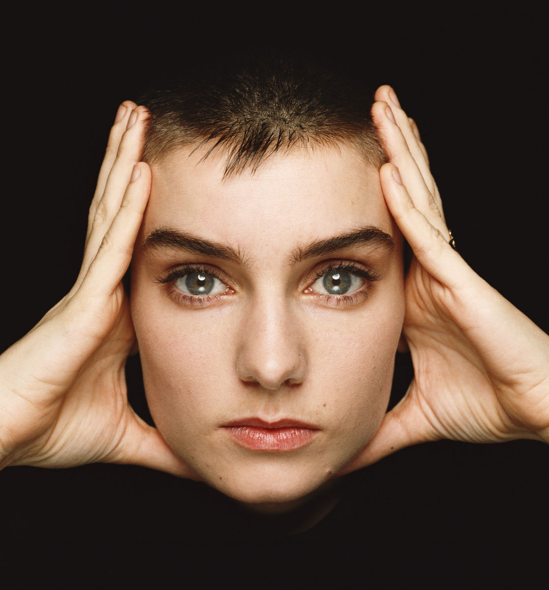
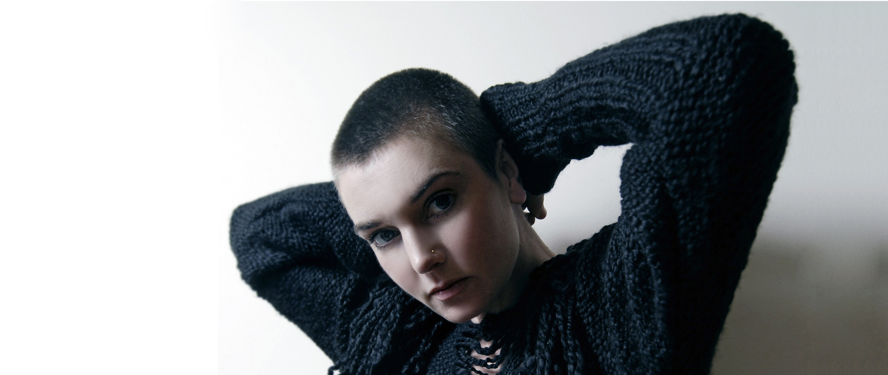

"Nothing compares to you" - одна из самых ярких песен в истории музыки, которая имеет прямое отношение к Ирландии.

Композиция была написана Принсом для группы The Family, но осталась незамеченной в оригинальном исполнении. Однако, когда за дело взялась настоящая ирландка Шинейд О'Коннор - дело пошло вверх.
Певица родилась в Гленагири, пригороде Дублина, 8 декабря 1966 года. Травматичное детство, развод родителей, исключение из школы и арест за кражу в магазине имели свои последствия. Будущую исполнительницу отправили в «Приют Магдалины», где пение стало для нее настоящей отдушиной.
На 15-летнюю О’Коннор обратил внимание Пол Бирн, барабанщик ирландской группы In Tua Nua, и даже стал соавтором их дебютного сингла «Take My Hand».
В 1985 году молодая певица подписала первый профессиональный контракт и переехала в Лондон. Весной 1986-го она дебютировала, записав саундтрек к одному из английских фильмов, и в этом же году начала работать над дебютным альбомом. Однако боссы лейбла посчитали, что в ее песнях слишком много кельтских мотивов и решили его не выпускать.
Певица заявила, что выпустит свои композиции сама — и в знак протеста побрилась наголо. Ее дебютный альбом «The Lion and the Cobra» увидел свет в 1987 году. Критики объявили его одним из самых успешных дебютов года. В 1990 году Шинейд О'Коннор превратилась в поп-идола. Во многом благодаря Принсу и его композиции «Nothing Compares To You», которую он отдал молодой и талантливой певице - Шинейд включила эту песню в свой второй альбом «I Do Not Want What I Haven’t Got».

Журнал Rolling Stone отдал песне в ее исполнении 132 место в списке 500 лучших песен, а журнал Billboard - 77 место среди величайших песен всех времён. По иронии судьбы, самой популярной песней композитора О'Коннор стало произведение чужого авторства.
Возможно, в этом есть воля случая, и есть шанс стать популярным, исполнив известную песню на свой лад. Для этого вам нужно лишь немногое – снять видео со своим исполнением кавера на песню любого ирландского музыканта или группы, опубликовать это видео на youtube, а ссылку прислать на irishtrue.vgorode.ua. Заявки для участия в конкурсе принимаются до конца ноября, а на кону – собственный Рокстар Уикенд в Дублине!